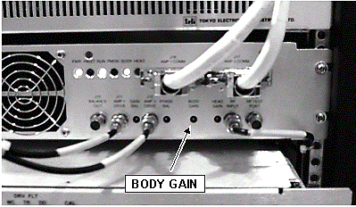
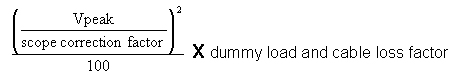
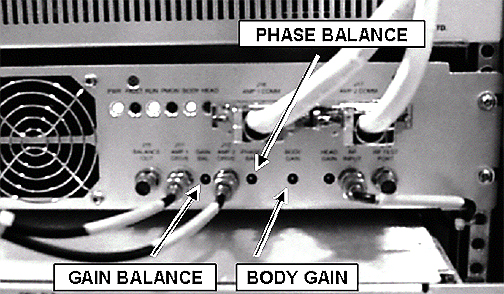
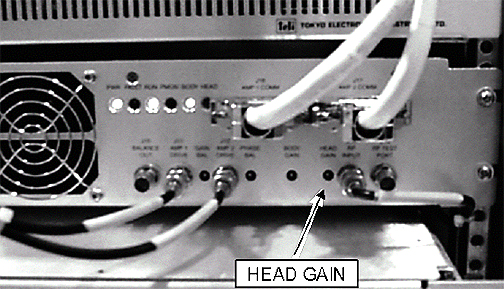

Operating Documentation
Direction 5440001-3, Rev# 6
Signa HDxt Service Methods
Module Version 3.0, Version Date 10/14/10
Operating Documentation |
| Required Persons | Preliminary Reqs | Procedure | Finalization |
|---|---|---|---|
| 1 | Not Applicable | 1 hour | Not Applicable |
Refer to the Tools and Test Equipment Section below for equipment required to measure power with the RF Power Measurement Kit or refer to Alternate Equipment Setup. The RF Power Measurement Kit is the preferred method for RF power measurement.
The procedures contained within this document must be run in the designated sequence:
| Item | Qty | Effectivity | Part# | Manufacturer | |
|---|---|---|---|---|---|
| 100 MHz Scope (equivalent or greater) | 1 | - | 46-183029P61 | - | |
| RF Power Measurement Kit | 1 | - | 46-317724G1 or G2 | - | |
| 50 ohm, 200 Watt, 30dB Attenuator (dummy load) | 1 | - | 46-317724P14 | - | |
| RF Test Cables Kit | 1 | - | 46-255816G1 | - | |
| Digital Multimeter (DMM) | 1 | - | 46-194427P49 | - | |
| DMM Test Cable - BNC to Banana (optional) | 1 | - | 2239139 | - | |
| Screwdriver, slotted (long & narrow) | 1 | - | - | - | |
| ||||
| POSSIBLE RF BURNS. | ||||
| POSSIBLE RF BURNS WHEN DISCONNECTING HELIAX CABLES FROM J3 OR J4 ON THE REAR OF THE SRF MODULE. | ||||
| PREVENT POSSIBLE RF BURNS WHEN DISCONNECTING HELIAX CABLES FROM J3 OR J4 ON THE REAR OF THE SRF MODULE BY VERIFYING THAT THE SYSTEM IS NOT MANUALLY PRE-SCANNING OR SCANNING. VERIFY THAT THE SCAN DESKTOP ICON DISPLAYS THE “IDLE” MESSAGE. |
| ||||
| Property Damage! Prevent Coil and Associated Switch Damage by Removing All Phantoms and Hardware (i.e., Head Coil, Surface Coil...) from the Magnet Bore. | ||||
| ||||
| POSSIBLE RF BURNS. | ||||
| POSSIBLE RF BURNS WHEN DISCONNECTING HELIAX CABLES FROM J3 OR J4 ON THE REAR OF THE SRF MODULE. | ||||
| PREVENT POSSIBLE RF BURNS WHEN DISCONNECTING HELIAX CABLES FROM J3 OR J4 ON THE REAR OF THE SRF MODULE BY VERIFYING THAT THE SYSTEM IS NOT MANUALLY PRE-SCANNING OR SCANNING. VERIFY THAT THE SCAN DESKTOP ICON DISPLAYS THE “IDLE” MESSAGE. |
| NOTE: | Property damage! Prevent coil and associated switch damage, by removing all phantoms and hardware (i.e., head coil, surface coil...) from the magnet bore. |
Verify that the system is not scanning and that all coils have been removed from the magnet bore.
Remove the front cabinet cover on the System Cabinet and RF Cabinet.
If your system has a SSM, disable SSM Faults, see Illustration 1. On the front of the SSM place the 2 (two) power MONITOR switches (A and B) to the middle BYPASS position.
Illustration 1: SSM FRONT PANEL SWITCHES DISABLED

If your system has a Driver module, disable driver module faults, see Illustration 2. Place switch SW2 in the Down (TR Disable) position.
Illustration 2: Driver Module Switches

If using the RF Power Measurement Kit then refer to the RF Power Measurement Kit laminated card set.
Look in the upper, right corner of each card and find the card labeled 72 (1.5T Body Output).
| NOTE: | The body RF output connection is no longer to the nonexistent EFB unit, as the older RF Power Measurement Kit cards show, but instead to the J4 output on the rear of the RFI Module. An RF adapter is provided in the RF Power Measurement Kit to connect between the HN J4 body RF output and the RF Power Measurement Kit 40 dB N-connector coupler. |
Configure the system as shown in the illustration on the card.
Confirm that the rotary attenuator is set to the correct position indicated on the card.
If using the wattmeter or scope (NOT the RF Power Measurement Kit) to measure power then refer to Alternate Equipment Setup for the proper system body configuration.
Prepare the system to scan in Body mode as shown in Table 1
Table 1: SCAN PROTOCOL: BODY MODE
| 1. | [New Pt] |
| Id: geservice <ENTER> | |
| Name: rfi cals | |
| Weight (Lb.): 300 <ENTER> | |
| Set Patient Protocols to Service. | |
| 2. | At front enclosure: |
| Landmark in the Head area - remove any coils. | |
| Press LANDMARK. | |
| Press MOVE TO SCAN. | |
| 3. | In the Patient Position Protocol field: |
| Select [Other] in the Patient Protocol field, and scroll through the list to the protocol [1.5T apb cal]. | |
| Select Series 1 for the body protocol. | |
| 4. | [Save Series]. |
| 5. | [Research Operations]. |
| [Setup Params]. Set TG to 50 [Done] | |
| 6. | [Research Operations]. |
| [Display CVs]. Highlight CV Name and enter the following: | |
| CV Name: calmode <Enter>, CV Value: 5 (Dual Logamp Waveform). | |
| [Accept] | |
| 7. | [Research Operations] |
| 8. | [Download] |
Verify Body LED is illuminated on front of RFI Module.
[Manual Prescan][Scan TR]. Slowly increase TG to 200.
| NOTE: | Observe the following:
|
Verify the Unblank LED on the front of the RFI Module pulses on/off.
Illustration 3: POT LOCATIONS ON RFI MODULE

If using the RF Power Measurement Kit, refer to the specified number of divisions printed on the RF Power Measurement Kit card 72 (1.5T Body RF Output) needed to achieve 16 kW of RF power output. Adjust the Body Gain pot on the front of the RFI so that the RF waveform displayed on the scope meets, but does not exceed, this number of divisions. See Illustration 3.
If using the wattmeter procedure then read the wattmeter display and calculate the RF output power from the formula below. The dummy load and cable loss factor was determined from the procedure in Dummy Load and Cables Calibration. Adjust the Body Gain pot on the front of the RFI Module until the RF output calculated from the formula meets, and does not exceed, the 16 kW (72 dBm) specification. See Illustration 3.
Table 2: RF Power Measurement (in watts) Using Wattmeter And Formula
| Wattmeter reading (in watts) X dummy load and cable loss factor |
If using the oscilloscope procedure (NOT the RF Power Measurement Kit) then read the peak voltage (Vpeak) from the scope display and use the formula below or the Power Calculator Tool (located at on the Service Methods CD-ROM) to calculate the RF output power. The dummy load and cable loss factors were determined from the procedure in Dummy Load and Cables Calibration. The scope correction factor was determined in Scopes with Less Than 300 MHZ Bandwidth. Adjust the Body Gain pot on the front of the RFI until the RF output calculated from the formula meets, and does not exceed, the 16 kW (72 dBm) specification. See Illustration 3.
Table 3: RF Power Measurement (in watts) Using Oscilloscope And Formula
 |
Decrease TG to 0 (zero). [Done].
The Gain Balance and Phase Balance Adjustments are performed using an oscilloscope. These adjustments should be done with the system outputting an amount of RF body output power as close to 16 kW (72 dBm) as possible.
| NOTE: | If the RF Amplifier trips, decrease the RF Output signal by minimizing counterclockwise (CCW) the Body Gain pot adjustment. If amplitude faults continue to occur, reduce the TG value until the phase and gain adjustments are successfully completed. Check these adjustments again once the RF output power is close to 16 kW (72 dBm) and the TG is 200. |
See Body Gain Pot Adjustment, if necessary, for system setup. Refer to Illustration 4 for the pot locations.
Illustration 4: BALANCE (PHASE AND GAIN) POT LOCATIONS ON RFI MODULE

[Manual Prescan][Scan TR]. View the Body RF Output power on the oscilloscope. Slowly increase TG to 200. If the amps keep faulting during this adjustment then the TG can be reduced to a minimum of 170.
At the front of the RFI adjust the “Phase Balance” pot fully clockwise (CW).
Adjust the oscilloscope V/div to view the topmost portion of the RF sync pulse.
Adjust the scope to reference the top of the pulse to a horizontal graticle on the display.
| NOTE: | Do not confuse the “Body Gain” pot with the “Gain Balance” pot. |
Set the oscilloscope sweep rate to 500 microseconds / Div. This will expand the RF waveform across the screen and make the following adjustments easier to do.
| NOTE: | If the system stops scanning and faults during this adjustment, then reduce the TG by five (5) units and restart the manual prescan. |
At the front of the RFI adjust the “Gain Balance” pot to minimize the RF output sync pulse waveform peak amplitude. This is a 30-turn pot and multiple turns of the adjustment screw may be needed before a change is noticed.
At the front of the RFI adjust the “Phase Balance” pot counterclockwise (CCW) to maximize the RF Output sync pulse waveform peak amplitude. This is a 30-turn pot and multiple turns of the adjustment screw may be needed before a change is noticed.
The Final Body Gain Pot Adjustment must be performed after the Initial Body Gain, Phase, and Gain Balance adjustments are optimized. The Balance Out voltage at J15 is also checked to make sure that the amplifiers are properly balanced and that neither one is supplying substantially more RF power than the other. The amplifiers should share the workload. A balanced condition between the amplifiers is confirmed by comparing the voltage at J15 while the system is idle (This was done in Body and Head Maximum Power RF Output Checks) to that measured after the system has been pulsing for 1 minute. The higher the voltage (the closer it is to the idle voltage), the better balanced the amplifiers. An unbalanced condition will result in a significant decrease (between 0.5 and 1.5 VDC) in the voltage measured at J15 while the system is pulsing. This measurement is affected by ambient room temperature and component tolerances and is not a constant from one RFI to another. This is why two measurements, one taken while the system is idle and one taken while it is operational, are done.
[Manual Prescan][Scan TR]. Slowly increase TG to 200.
| NOTE: | Do not confuse the Body Gain pot with the Gain Balance pot. |
| NOTE: | If the RF Amplifier trips, adjust the Body Gain pot to reduce the RF output power and then increase the TG. Repeat this process until TG = 200 and the body RF output power is 16 kW (72 dBm). As long as the calibration in RFI Balance Adjustments (Gain and Phase), was done properly. The Gain and Phase Balance pots should not require any further adjustment. |
Illustration 5: Pot Locations On RFI Module

If using the RF Power Measurement Kit:
Then refer to the specified number of divisions printed on the RF Power Measurement Kit card 72 (1.5T Body RF Output) needed to achieve 16 kW (72 dBm) of RF power output. Adjust the Body Gain pot on the front of the RFI so that the RF waveform displayed on the scope meets, but does not exceed, this number of divisions. See Illustration 5.
If using the wattmeter procedure:
Then read the wattmeter display and calculate the RF output power from the formula below. The dummy load and cable loss factor was determined from the procedure in Dummy Load and Cables Calibration. Adjust the Body Gain pot on the front of the RFI until the RF output calculated from the formula meets, and does not exceed, the 16 kW (72 dBm) specification. See Illustration 5.
| RF Power Measurement (in watts) Using Wattmeter
And Formula: Wattmeter reading (in watts) X dummy load and cable loss factor |
If using the oscilloscope procedure (NOT the RF Power Measurement Kit):
Read the peak voltage (Vpeak) from the scope display and use the formula below or the Power Calculator Tool to calculate the RF output power. The dummy load and cable loss factors were determined from the procedure in Dummy Load and Cables Calibration. The scope correction factor was determined in Scopes with Less Than 300 MHZ Bandwidth. Adjust the Body Gain pot on the front of the RFI until the RF output calculated from the formula meets, and does not exceed, the 16 kW (72 dBm) specification. See Illustration 5.
| RF Power Measurement (in watts) Using Oscilloscope
And Formula: |
Make certain that the RF amplifiers have been pulsing for at least one minute and then use a DMM to measure the DC voltage from the BALANCE OUT J15 port on the front of the RFI. Compare this voltage with that recorded inBody and Head Maximum Power RF Output Check and confirm that the difference between the two is not more than 0.50 VDC. See Illustration 5 for the location of J15 on the front of the RFI.
If the J15 BALANCE OUT voltage fails to meet specification then make sure that the test equipment is not at fault. Repeat the BALANCE OUT and Body Gain Pot Adjustments in this section if necessary. If the J15 BALANCE OUT voltage still fails to meet spec then refer to General Troubleshooting.
Decrease TG to 0 (zero). [Done].
Verify scan desktop icon is displaying the “Idle” message.
Disconnect the DMM from J15 on the RFI
Reconnect Body Heliax after removing test equipment.
Proceed to Head Gain Pot Adjustment.
If not already done, SSM and/or Driver faults must be disabled. If needed see steps 1 - 4 of Body Gain Pot Adjustment for help in disabling SSM and Driver faults.
| ||||
| Property Damage! Prevent Coil and Associated Switch Damage by Removing All Phantoms and Hardware (i.e., Head Coil, Surface Coil...) from the Magnet Bore. | ||||
Verify that the system is not scanning and that all coils have been removed from the magnet bore.
| ||||
| POSSIBLE RF BURNS. | ||||
| POSSIBLE RF BURNS WHEN DISCONNECTING HELIAX CABLES FROM J3 OR J4 ON THE REAR OF THE SRF MODULE. | ||||
| PREVENT POSSIBLE RF BURNS WHEN DISCONNECTING HELIAX CABLES FROM J3 OR J4 ON THE REAR OF THE SRF MODULE BY VERIFYING THAT THE SYSTEM IS NOT MANUALLY PRE-SCANNING OR SCANNING. VERIFY THAT THE SCAN DESKTOP ICON DISPLAYS THE “IDLE” MESSAGE. |
If using the RF Power Measurement Kit then refer to the RF Power Measurement Kit laminated card set.
Look in the upper, right corner of each card and find the card labeled 63 (1.5T Head Output).
| NOTE: | The head RF output connection is no longer to the nonexistent EFB unit, as the reference cards in some of the older kits show, but instead to the J3 output on the rear of the RFI. |
Configure the system as shown in the illustration on the card.
Confirm that the rotary attenuator is set to the correct position indicated on the card.
If using the wattmeter or scope (NOT the RF Power Measurement Kit) to measure power, refer to (Alternate Equipment Setup) for the proper system head configuration.
Prepare the system to scan in Head mode per Table 4.
Table 4: SCAN PROTOCOL: HEAD MODE
| 1. | [New Series] |
| 2. | Select [Other] in the Patient Protocol field, and scroll through the list to the protocol [1.5T apb cal]. |
| Select [Series 2] for the Head Protocol. | |
| 3. | [OK] (if required). |
| 4. | [Save Series]. |
| 5. | [Research Operations]. |
| [Setup Params]. Set TG to 50 [Done]. | |
| 6. | [Research Operations]. |
| [Display CVs]. Highlight CV Name and enter the following: | |
| CV Name: calmode <ENTER>, 5 <ENTER> (Dual Logamp Waveform). | |
| [Accept] | |
| 7. | [Research Operations] |
| 8. | [Download] |
| 9. | From the Rx Manager Window select [Download]. |
Verify Head LED is illuminated on front of RFI Module.
| NOTE: | The Head Gain pot is directly affected by changes to the Body Gain pot. Adjust the Head Gain pot ONLY after completing final adjustment of the Body Gain pot, see Final Body Gain Pot Adjustment And Balance Out Check. |
[Manual Prescan][Scan TR]. Increase TG to 200.
Verify the Unblank LED on the front of the RFI Module pulses on/off.
Illustration 6: POT LOCATIONS ON RFI MODULE

If using the RF Power Measurement Kit then refer to the specified number of divisions printed on the RF Power Measurement Kit card 63 (1.5T Head RF Output) needed to achieve 2 kW of RF power output. Adjust the Head Gain pot on the front of the RFI so that the RF waveform displayed on the scope meets, but does not exceed, this number of divisions. See Illustration 6.
If using the wattmeter procedure then read the wattmeter display and calculate the RF output power from the formula below. The cable loss factor was determined from the procedure in Dummy Load and Cables Calibration. Adjust the Head Gain pot on the front of the RFI until the RF output calculated from the formula meets, and does not exceed, the 2 kW (63 dBm) specification. See Illustration 6.
Table 5: RF Power Measurement (in watts) Using Wattmeter And Formula
| Wattmeter reading (in watts) X cable loss factor |
If using the oscilloscope procedure (NOT the RF Power Measurement Kit) then read the peak voltage (Vpeak) from the scope display and use the formula below or the Power Calculator Tool (located at Power Calculator Tool to calculate the RF output power. The dummy load and cable loss factor was determined from the procedure in Dummy Load and Cables Calibration. The scope correction factor was determined in Scopes with Less Than 300 MHz Bandwidth. Adjust the Head Gain pot on the front of the RFI module until the RF output calculated from the formula meets, and does not exceed, the 2 kW (63 dBm) specification. See Illustration 6.
Table 6: RF Power Measurement (in watts) Using Oscilloscope And Formula:
Decrease TG to 0 (zero). [Done][End Exam].
Verify that the scan desktop icon is displaying the “Idle” message.
Replace the RF Head Heliax cable.
Proceed to System Restoration.
No finalization steps.